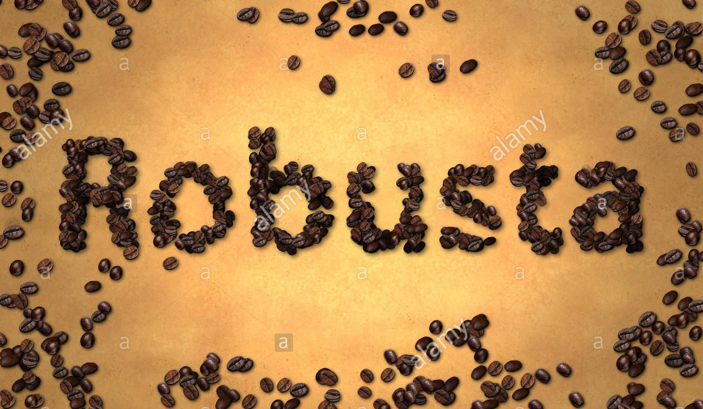

Cà Phê ROBUSTA - Niềm đam mê bất tận
Robus trong Tiếng Anh có nghĩa là mạnh. Cây cà phê Robusta ưa sống ở vùng nhiệt đới, độ cao thích hợp để trồng cây là dưới 1000 m. Nhiệt độ ưa thích của cây khoảng 24-29°C, lượng mưa khoảng trên 1000 mm. Cây cà phê vốn cần nhiều ánh sáng mặt trời hơn so với cây cà phê chè. Cà phê Robusta có vị đậm đà. Hàm lượng cafeinne cao (từ 2,4-4,4 %).

Việt Nam tự hào là quốc gia xuất khẩu cà phê đứng hàng thứ 2 trên thế giới sau Brazin. Hiện nay gần 90% diện tích cà phê ở Việt Nam được trồng là cà phê Robusta. Sản lượng xuất khẩu hàng năm của VN khoảng 1 triệu tấn và hầu hết là cà phê Robusta. Tuy nhiên, vì trên thế giới Robusta được xem là cà phê bình dân, hương vị không được ưa chuộng và Robusta luôn luôn có giá trị thương phẩm thấp hơn nhiều so với Arabica. Cà phê Robusta Việt nam (cùng với sự yếu kém trong kỹ thuật canh tác, bảo quản và chế biến...) không dược thế giới đánh giá cao về chất lượng. Ở Việt nam, cà phê bột có thành phần Robusta có mặt khắp nơi, nên hầu hết người Việt Nam biết đến cà phê là biết Robusta. Vị đậm đà nhưng Robusta không có mùi thơm quyến rũ như dòng Arabica. Hơn nữa, do các nhà sản xuất cà phê bột ở Việt nam muốn hạ giá thành đã trộn vào Robusta một tỷ lệ lớn các hạt đậu bắp rang, rồi tẩm ướp vào hổn hợp nầy đủ các loại hương liệu nhân tạo với nồng độ rất cao. Qua đó, rất nhiều sản phẩm cà phê việt có phong vị thật đậm, rất đắng, đen thùi, sóng sánh và thơm nồng nực mùi hương liệu mà giá lại thật rẽ, được bán ở khắp mọi nơi. Hầu như mùi hương mà người tiêu dùng Việt nam cảm thụ được ở các quán cà phê lớn, nhỏ là mùi hương bốc ra của đủ loại hóa chất chứ không phải là mùi hương thật sự của hạt cafe (hương của tinh cà phê, hương bơ, hương sữa, hương va ni, hương sô cô la, hương hạt dẽ, hương béo... đủ thứ hương liệu ...).
Robusta là mạnh mẽ, Robusta đại diện cho phái nam, là cực dương, Robusta thu hút đến mê người, Robusta là bạn đồng hành, đem đến cho ta sự sáng suốt trong suy nghĩ, nghị lực trong công việc, sức mạnh để quyết định, sự sảng khoái, niềm vui và tình thân ái khi ngồi bên bạn bè. Ôi Robusta, người bạn đường thân thiết! Robusta niềm đam mê của ta!